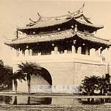

關於新竹
向您介紹新竹的一些地理位置。
新竹縣於臺灣西北部，北臨桃園市，南接苗栗縣，東南以雪山山脈與宜蘭縣、臺中市相連，西部面向台灣海峽，西接與新竹市交界。全縣總面積約1,427平方公里，大多為丘陵、台地及山地。
新竹因為冬季季風強盛，為全省之冠，所以有「風城」之稱，因新竹的沖積平原由東南向西北呈「喇叭狀」開敞，無論東北季風或西南季風一進入本市，風勢即受約束而增強。
歷史發展
帶您簡單的走過新竹的點點滴滴。
-

荷蘭、西班牙時代
17世紀荷蘭殖民台灣，漢人還未大規模的抵達新竹地區開墾，主要居民為臺灣原住民。史料發現荷蘭人與臺灣原住民溝通多由客家人居中翻譯，因此有學者認為客家人與台灣閺南人幾乎是同時抵達臺灣，甚至可能更早。
-

清朝
1683年台灣併入清朝版圖，竹塹改屬諸羅縣。1723年，淡水廳治設於新竹市市區，成為清朝時期北台灣第一個建城的重鎮。
-

日治時代
乙未戰爭中，新竹成為抵抗日軍接收北台灣的重要據點。將新竹劃歸台北縣，並置新竹支廳管理。1920年9月合新竹、桃園支廳為新竹州，州治設於新竹郡。
-
民國初期
中華民國政府遷台後，1950年調整行政區域，分為桃園、新竹、苗栗三縣，此時的新竹縣之縣治設於新竹市。
-
近代
1970年代工業技術研究院創設於新竹市，1980年代新竹科學工業園區設立於新竹市東區，1990年代位於湖口鄉的新竹工業區也逐漸從傳統產業聚落轉型為新興高科技產業聚落。
在地特產
讓新竹人讚不絕口的好東西。
米粉
「新竹米粉」在日據以前，因為新竹風有利於吹乾又粗又濕的「水粉」，所以聞名全省；光復後，又以能夠製作又細又Ｑ的「炊粉」，獨到的技術和品質才能打響名號、知名海內外。
貢丸
新竹的貢丸是以木棒或優質機器「摃」出來的，而新竹貢丸的材料必須用剛宰殺不久的新鮮「溫體豬肉（活肉）」製作，利用活肉新鮮纖維的彈性所做出來貢丸尤其好吃，也因此新竹居民的日常小吃成為台灣有名的新竹特產。
柿餅
新竹新埔位於東北季風背風側，故冬季的風勢強勢且乾燥，因此很適合柿子的曝曬。柿餅的加工過程十分繁雜且重視技巧，而當地勤儉誠樸的客家聚落正好提供了足夠做柿餅的人力。
粄條
大約在清朝乾隆年間隨著客家移民，製作粄條的技術從中國廣東傳入台灣，新竹地區往來商旅走到新埔稍加休息時因粄條便宜又能充飢而備受青睞，符合客家精神，此得以在新埔傳承迄今，為客家遊子離鄉後難忘的家鄉味。
地圖導覽
讓您看看這些熱門景點的分佈位置。
End: